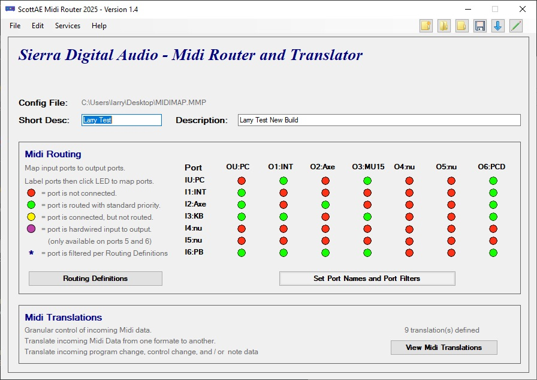
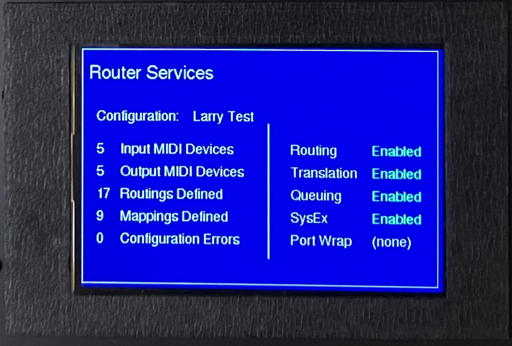
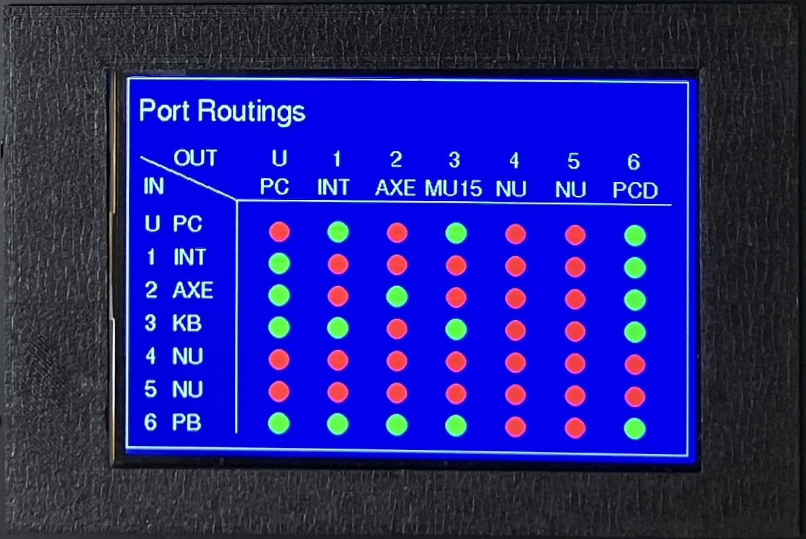

|

|
If you find something useful,
A coffee is very appreciated!
|

|
- Midi System Designs
- Embedded Systems Programming
- CAD and 3D Printing
- Custom PC Builds
|
|
|
|
MidiXLate Midi Router
Midi routing is the process of transmitting and receiving music data (digitally encoded music notes and control messages)
from one musical device (ex: your keyboard) to another musical device (ex: your PC recording software).
Typically, Midi communication is accomplished by connecting all Midi enabled music devices to a Midi 'hub' which 'broadcasts' ALL Midi music
data received at the hub to ALL Midi devices connected to the hub. This hub approach generates excessive Midi network traffic and complicates
the configuration of each Midi device.
A more strict definition of 'routing' is to define 'routing rules' that are downloaded to the router defining how Midi data
received at the router will be routed (and optionally enhanced) to one or more Midi devices, not ALL midi devices (like a hub)!
This approach simplifies the midi network setup and optimizes Midi network performance by minimizing network Midi traffic,
resulting in minimized midi network latency.
MidiXLate Router Additional Information
Click here for PC Configuration Screens
PC Router Configuration
The router configuration is created on the PC and
downloaded to the router via the router download
screen (not shown) and USB cable.
- Provide a short description of the router config.
- Provide a long description of the router config.
- Label the Midi port conections (Label Ports) button.
- Specify Midi Routings by clicking on LEDs to toggle.
- Optional: Press button to specify Midi Translations.
- Optional: Press button to specify Channel Locks.
- Remember to save your router config to PC desktop!.
- (multiple configurations are supported)
|

|
| |
Midi Translations
Midi Translations are used to change a Midi message
from one format to another. For Example: assume you
want to press a buttton (controller) on you keyboard
to send a 'patch change' command to your tone generator.
Use the translation screen to identify and capture the
midi CC (continuous control) command and translate it
to a Midi PC (program change) cmd.
Translation Screen
- Provide a short description for the translation.
- Specify the incoming midi to capture.
- Specify the outgoing translated midi to send.
- 256 midi translations are permitted.
- Copy, paste, and delete functions are provided.
- Bulk copy, paste, and delete functions are provided.
|
|
| |
Midi Channel Locks
Midi Channel Locks are used to lock specific Midi data
to a specific midi channel (by Midi port and Midi command).
For example, assume you have a Reaper MIDI DAW track that
contains a drum patch data routed to your Yamaha MU15 drum
machine. Some rougue drum tracks do not encode drum notes
to Midi channel 10. Use the channel lock screen to guarantee
all Reaper Midi drum data sent to your Yamaha Mu15 is locked
to Midi channel 10.
Channel Lock Screen
- Specify the input and output ports.
- Specify the channel to lock outbound midi data.
- Specify if the lock is CC,PC,NT,or all midi data.
- 96 midi locks are permitted.
- Copy, paste, and delete functions are provided.
- Bulk copy, paste, and delete functions are provided.
|

|
Click here for Router Configuration Screens
|
Router Screen: Splash Page
The splash page is displayed for two seconds when the
router is powered on, then the router services screen
is displayed.
The splash page screen provides router firmware
version information, version date information and
a support email address.
|
|
| |
Router Screen: Router Services
Press the Configure button twice (to latch and unlatch)
within two seconds to cycle through the router
configuration screens.
The fisrt paramter is the active configuration
downloaded from your PC
The left column shows:
- The number of input devices configured.
- The number of output devices configured.
- The number of routings defined (see next screens).
- The number of translation mappings defined.
- The number of channel locks defined.
- The number of config errors found at download.
The right column shows services enabled.
- If router routing service is enabled.
- If router translation service is enabled.
- If router channel locking is enabled.
- If router queuing is enabled.
- If router SysEx processing is enabled.
- If port 5 or port 6 is 'wrapped'.
|

|
| |
|
Router Screen: Device Names
Press the Configure button twice (to latch and unlatch)
within two seconds to cycle through the router
configuration screens.
The Device Names screen displays the names of the devices
(configured on the PC and downloaded to the router) attached
to the input ports and output ports. (n/u means not used).
|

|
| |
Router Screen: Port Routings
Press the Configure button twice (to latch and unlatch)
within two seconds to cycle through the router
configuration screens.
The Port Routing screen displays the names of the input
devices vertically and output devices horizontally.
This visual graphic shows which input devices are
connected to which output devices.
In the simple port routing screen shown, I am sending all
midi data back to their origin (useful for my router testing)
but not a very meaningful configurration.
Any input device can be 'routed' to any output device.
- Green: input device is connected to output device.
- Yellow: port is connedted but not routed (informational).
- Red: input device is connected to output device.
- Magenta: port is 'wrapped' (input connected to output).
Wrapped Ports
Wrapped ports are only available on port 5 or port 6
(a router internal switch ties port 5 input to port 5 output).
For example, wrap keyboard input port 5 to tone generator
on output port 5 to remove an possibility of latency.
|

|
| |
Router Screen: Port Filtering
Press the Configure button twice (to latch and unlatch)
within two seconds to cycle through the router
configuration screens.
The Port Filtering screen shows which Midi commands
are processed on which Midi input ports and output ports.
The input/output port, device, and commands processd:
- N: note on / note off commands are processed (yes/no).
- P: program change commands are processed (yes/no).
- C: control change commands are processed (yes/no).
- S: sys ex commands are processed (yes/no).
|
|
Click here for a basic Midi overview.
Midi Overview
MIDI (Musical Instrument Digital Interface)
is a technical standard and communication protocol that allows musical devices
(instruments, computers, recording software, pedalboards, effects processors, and more) to communicate with each other.
Midi is used to communicate music note data, music commands, and vendor specific (system exclusive) commands.
Music Note Data:, Midi can be used to record and play musical notes. For example, when you press a note on a Midi
keyboard, the note number (ie: the note pressed), the note velocity (how hard the note was played) and the keyboard 'channel'
are encoded into digital Midi data which is sent to your computer's recording (DAW) software.
Software such as Pro Tools, Reaper, Cubase, can read, record, and play back midi data.
Playback of a midi recorded data will sound identical to the original performance.
Midi music data encoding is standardized across all music gear manufacturers.
Music Commands:Your digital piano keyboard likely has button, sliders, foot pedals, and wheels to adjust volume, pitch bend a note,.....
In Midi jargon, these are called ''continuous controllers', or more commonly, 'controllers'..
Controllers do not change the note being played but rather transmit information to the listening device.
For example, your keyboard may have a slider that is use to control the volume of your keyboard.
This slider does not affect the note being played, but 'controls' the volume of the note being played (by sending a Midi 'continuous
controller 7' information to your PC, amplifier, or PA system). The target device recognizes the volume controller and adjusts the
keyboard volume accordingly. Midi Continuous Controller implementation is mostly standardized across all music gear manufacturers.
Vendor Specific Commands, Midi provides a free form Midi format called 'System Exclusive' which provides musical equipment
vendors with options to implement manufacturer specific functions in their musical equipment. For example, you may own a Roland guitar
effects processor that has hundreds of 'patches'. Each patch has many possible settings, such as reverb, chorus, delay,...
Since Roland's guitar effects processors have unique internal circuitry that does not apply across all Midi device manufacturers,
Roland implements unique SysEx commands to control their devices.
The most common SysEx commands are backup and restore commands; to backup and restore your Midi device configuration to your PC.
Click here for more MidiXLate router details.
MidiXLate router details.
The MidiXLate router is a true router, meaning every midi packet is inspected and 'routed' to it's intended destination(s).
Routing Midi data greatly reduces Midi network traffic, eliminating a flood of extraneous midi network data.
Excessive Midi note data and Midi 'active sensing' commands can easily increase Midi network latency, killing a Midi network's efficiency.
With Midi routing, the sending and receiving midi devices are now much simpler to configure because the midi data received at a midi device
is guaranteed to be intended solely for that midi device.
For the average home user with only a few Midi devices, a Midi router may not add much value. A Midi hub is the right option.
For a performing group (or sophisticated home studio) with a large number of midi devices and complicated midi network,
the MidiXLate router can be a life saver.
With MidiXLate, you have complete control of Midi 'port filtering', 'translation', and 'channel locking' capabilities.
As for MidiXLate's performance, the engine of the router is a blinding fast Atmel SAM3X8E ARM Cortex-M3 processor running at 84 MHz,
providing extremely low latency.
In addition to Midi routing, the MidiXLate router provides 'port filtering' capabilities.
For each of the six input ports and six output ports, you can specify, by port, to process or ignore,
note on/off, continuous control, progam change, and/or system exclusive commands.
The router also provides a sudo Network Address Translation (NAT) features called 'Translation' where
midi data can be 'translated from one Midi format (such as note data) to another Midi format (such as continuous controller).
This is extremely helpful when there is no direct path for one piece of midi gear to control another piece of Midi gear.
Next, the router has a Channel Locking feature providing flexible rules to lock midi data (sent to an output port) to a particular
midi channel. For example, assume you have a drum machine attached to output port 6. All drum notes are required (by Midi standard) to be
encoded to Midi channel 10,yet some drum patch providers fail to encode their drum patches to midi channel 10.
With MidiXLate, you can force all data to your drum machine to midi port 10.
Channel Locking has many other useful features.
Click here for a simple MidiXLate router use case.
MidiXLate router use case.
Assume you have a keyboard (with keys, sliders, knowbs, switches, and drum pad) connected to the MidiXLate router on input Port 1.
Further assume you have a Yamaha MU15 drum machine connected to MidiXLate router on output Port 2.
Further assume you have a Roland Integra Synth module connected to MidiXLate router on output Port 3.
Further assume you have a Reaper Digital Analog Workstation (DAW) connected to MidiXLate router input port 4 and output port 4.
Lastly assume you have MidiOX running on a development PC connected to MidiXLate router output port 4.
Configure the MidiXLate software to send Keyboard drum pad data to Yamamha MU15 drum synth.
Next, configure the MidiXLate software to send keyboard keys to Roland Integra synth.
Next, configure the MidiXLate software to send keyboard knobs, sliders, and switches to select Roland synth patches, volume, tempo,...
Next, configure the MidiXLate software to send keyboard transport controls (start,stop, play, record) to Reaper synth.
Next, configure the MidiXLate software to send keyboard knobs, sliders, and switches to select Reaper channels, volume, tempo,...
Optionally, split your keyboard keybed into 'zones' using the MidiXLate 'Translation' feature
Optionally, configure your Reaper DAW to send recorded Midi performance data to the Yamaha drum synth and Roland Integra synth.
Lastly, start MidiOx on your development PC and monitor ALL the Midi traffic on your Midi network!
This configuration would be VERY DIFFICULT to accomplish with a Midi HUB, but moderately easy with MidiXLate!
Click here for MidiXLate router pricing and availibility.
MidiXLate pricing and availability.
MidiXLate routers are custom builds. I typically build a handful of routers each year.
If you would like to 'try before you buy', send an email to
SierraDigitalAudio@gmail.com.
I rent demo routers for $150 month (in 2024) and the customer pays for shipping (both ways).
The price of renting a router is applied to the purchase price.
I you want to purchase a new router, the purchase price is $850 (in 2024).
I hand build these routers in the mountains of northern California and the profit margin on each router is slim.
As a customer, you will receive excellent support (limited phone and unlimited email), discounts for router upgrades & accessories,
and priority for router (hardware and software) customizations.
|
|
MidiControl Software (for Windows 10 and above)
FREE!
Have you every wanted to control all of your Midi devices from your PC desktop?
For example, assume you have a Roland Integra 7 Sound Module and
you currently use the scroll wheel on the face of the Integra 7 to tediously navigate to your favorite 50 sounds.
Rather than using the Integra 7 navigation wheel, you can create a list of your favorite 50 sounds in MidiControl and
easily switch between the Integra 7 sounds with a simple press of a button on your PC. Much easier!
MidiControl is a FREE
Windows PC desktop utility used to organize the Midi commands you use in your music production. MidiControl is not designed
to play Midi files, rather to catalog your Midi commands for use from your desktop. MidiControl provides ten bookmarks
(sections) for up to 2000 Midi commands. Bookmarks can be arranged by Midi device, song, setlist,... giving you simple control
of all your Midi devices from your PC desktop.
|
MidiControl additional information (click here)
As a typical musician, you likely have many midi devices such as keyboards, guitar effects, drum machines, voice processors, and more.
You will find it helpful to catalog all of your Midi commands and optionally send those midi commands from your PC desktop to your midi devices
(the same Midi commands that are sent from your Midi device.)
For example, assume you have a performance where every song requires a different keyboard patch, drum pathch, guitar patch, guitar volume, ....
With MidiControl, you can define groups (bookmarks) by song and list all the midi commands to setup each song.
Using your PC desktop, you can send the Midi commands to all your midi devices to setup for the next song (patch changes, controllers, ...)
Alternatively, as shown in the example screens, each bookmark can represent a Midi device and the Midi commands used to control the device.
To start, connect all of your midi devices to your computer via a Midi hub (which you have likely already have done).
Next, download, install, and configure MidiControl (FREE!).
When configuring midi control, define (song or midi device) groups (bookmarks) for each midi device and/or song.
Next, setup the midi commands used by your midi gear (keyboards, pedal boards, effects processors,...)
As needed, press the 'Send' button next to each Midi command to control your midi hardware.
A script of midi commands is being considered for the next release.
You now have a simple means to control all of your Midi devices from your PC!
MidiControl Screens (click here)
This is the MidiControl opening screen.
(Screen options 11-17 removed to fit display)
When MidiControl is started, the last configuration
is loaded and shown is red
MidiControl Speed buttons (top left)
- Down Arrow: Go to next page.
- Up Arrow: Go to prior page.
- Bookmarks: Open the bookmarks dialog window.
- Midi Relay: Open the Midi relay / listener screen.
- Midi Utilities: Open the Midi utilities screen.
- Save Configuration: Saves the current configuration.
- Help Text: Opens Notepad help text.
- Information: Displays MidiControl version info.
- Buy Me A Coffee: Contributions are appreciated!
- Page Number: Jump to a specific page
MidiControl Screen Body
- Status message (red): shows status of latest operation.
- Bookmarks: Notice seven bookmarks (starting with DAW).
- Midi Commands: First 20 commands are shown for DAW
- Numbered Buttons: Press button to edit Midi command.
- Midi Labels: Show cmd desc, cmd detail, and out device.
- List Midi Devices: Midi devices current connected to PC.
|

|
| |
This is the MidiControl Bookmark Management screen.
Use this screen to build Midi commands for buttons (1-200).
A bookmark is a page number (from 1-200) assigned by you.
Bookmarks appear across the top of the screen body.
Click on the bookmark to jump to a specific page.
Bookmark properties
- Bookmark name: Give your bookmark a name.
- Bookmark page: Page where Midi commands are found.
- Delete button: Deletes the bookmark (not commands).
|

|
| |
This is the MidiControl Midi Command definition screen.
Use this screen to define up to 2000 midi commands.
You can also use this screen to 'learn' a midi command.
Build Midi Command
- Type of Midi command: Current allowed values are PC,CC,NT.
- (SysEx commands will be in a future release).
- Description: Provide a description of this command.
- SysEx: Provide the SysEx command.
- Channel (1-16), Controller (1-256), and Value (1-128).
- Select the Midi device to receive the Midi command.
Learn Midi Command
Learning a midi command 'listens' for midi activity and displays
the Midi activity in the learn box.
The Midi input device needs to be started (put in listening mode)
on the Midi Listener (next) screen.
When MidiControl is active and a learned command is received,
the midi command (above) is sent to the output midi device.
Learn Midi Command Usage
- Select the Midi input device to start learning.
- Press the 'Start Learning' button.
- Engage a note or controller on your remote Midi controller.
- The remote midi is recognized and values below are populated.
- Change Midi values to suit your needs.
- Press save button to save this midi action.
|

|
| |
Midi Listener Screen
Use this screen to start a 'listener' for a Midi device connected to your PC.
The listener must be started before MidiControl can learn a Midi command.
Multiple listeners can be started.
Some Midi devices may be locked to another running application.
Learned Midi Command Example
- Midi2x2 started listening by clicking on the red led (to turn green).
- Stop listening by clicking on the green led (will turn red).
- The dialog box (right) shows listener started and detected activity.
- Midi2x2 was started and receive a keyboard note 54, channel 0, velocity 100
|

|
| |
|
Midi Utilities: Midi Global Update
The Midi Device Global Update dialog box is used to change all
MidiControl references from one Midi device to another Midi device.
For Example, assume you configured many Midi commands connected to
a Midi USB cable that is connected to your keyboard. You then change
the Midi USB cable to a USB hub. Rather than changing all your midi
commands from the USB cable to the USB hub, come to this screen and
globally change all references from the USB cable to the USB hub
Midi Utilities: Send Note On / Off to a Midi Device
This is a simple Midi test tool to test Midi connectivity by sending
a Note On/Off command to a Midi device to see if the Midi device is
connected and operating correctly
|

|
| |
|
Midi Control Release Notes and Help Text
Pressing the yellow question mark on the MidiControl home screen
displays (currently minimal) release notes and help text.
Improved help text and release notes are a priority fo a future relase.
|

|
|
|
** New features will be added as MidiControl evolves. If you have a particular feature you would like added, please
email us.
|
|
MidiOrganize Software (for Windows 10 and above)
FREE!
MidiOrganize provides a FREE and simple means to organize your Midi instrument (drum, bass, piano,....) loops and
optimize the flexibility and performance of your DAW (Digital Analog Workstation, such as ProTools, Reaper, Cubase,...) mixes!
Think of MidiOrganize as a PC based Midi librarian, used to catalog your Midi loops by instrument, by song, by set list, or any other
method you require. To use Midi loops inside your DAW, simply drag and drop the Midi loop from MidiOrganize into your DAW Midi track.
Optionally, there is a 'preview' feature that allows you to play the Midi loop inside MidiOrganize via an embedded Windows Media Player plugin.
MidiOrganize Screens (click here)
The opening MidiOrganize screen (example).
- Bookmarks to Midi files (drum loops) are shown in upper left corner.
- Drill down into Midi directories (drum loops) in panes 2,3,4.
- The four panes display Midi files (drum loops) in a tree type structure.
- Press button 'Manage Midi Groups' to setup your directories.
- When MidiOrganize is started, bookmark 1 is always displayed.
- Midi files (as shown in pane 4) are drag-dropped into your DAW track.
|

|
| |
The opening MidiOrganize screen.
- Screen shows how a bookmark 'GrooveMonkee' is displayed at startup.
- In this example, GrooveMonkee points to a GrooveMonkee root folder.
- As shown in the first pane, the GrooveMonkee root folder has 7 subfolders.
- Drill down into the subfolders to populate panes 2,3,4.
- Pane 4 is infinitely deep. You are not limited to four directory deep.
- The next screen demonstrates how to setup your directories.
|

|
| |
The 'Manage Midi Groups and Bookmarks' screen.
- Press the 'Manage Midi Groups' button to open MidiGroup window.
- In the MidiGroup window, give your bookmark a name.
- Use the folder browser to select a midi root folder.
- In the example, I defined four bookmarks pointing to four roots.
- On the home screen, no you can navigate directly to folder root.
- Close the MidiGroup window to navigate your midi files.
- Drag & drop midi files from the four panes in your DAW midi track.
|

|
| |
Search the Midi groups by genre.
- Search for Midi files by file name / genre.
- Key the search phrase in the combobox or select from drop down.
- Press Search Midi Groups button to search your midi bookmarks.
- Results of the search are displayed in the first pane.
- Drill down into the panes to view files matching your search.
- New genres can be added to the MidiOrganize config file.
- MidiOrganize config file found in Manage Midi Groups and Bookmarks.
|

|
| |
Windows Midi file player.
- Use Windows Media Player Sto preview your midi files.
- Drag and drop midi files from any of the 4 panes onto player.
- Midi drums require midi file set to midi channel 10.
- Some midi files are not set to midi channel 10.
- Check 'Change Channel 10' to fix midi file to channel 10.
- Fix does not change the original midi file.
- Fix creates a new file shown in media player.
- Show Conversion button displays midi channel 10 updates.
|

|
| |
DAW track setup.
- Send midi loop to drum machine and listen to drum machine audio.
- In your DAW, set your track to send midi to your midi drum machine.
- Connect your DAW to your drum machine using a PC USB to midi cable.
- Connect your drum machine audio output to your audio input interface.
- In your DAW, create a drum audio track next to your drum midi track.
- In the drum audio track, record from your audio interface / drum machine.
- See the link below that describes this process for reaper.
|

|
A Cost and Performance Alternative to VSTs (click here)
VST's are virtual instruments that run inside your DAW. The sound of the instrument is generated by the VST.
This is the key takeaway; the VST creates the sound (tone) of the instrument inside your DAW.
VST's are typically expensive, require a license, requiring an internet connection, and the burden of VST's on the computer's CPU can be severe.
MidiOrganize is purposely not a VST. It is designed to work outside your DAW, with high end sound modules, such as the
Roland Integra 7 SuperNatual Sound Module or the more affordable
Yamaha MU15 Tone Generator.
For maximum flexibility, you can continue build your DAW project using VSTs, but when performing or building a final mix,
you may opt to disable the VSTs on your Midi tracks and send the Midi data to your superior external Midi sound module such as the
Roland Integra 7 SuperNatual Sound Module. The sound quality of the Roland Integra 7 SuperNatual Sound Module must be experienced to believe!
MidiOrganize follows the 'drill down' look and feel of most popular drum VSTs.
If you understand the drilldown structure of the most common drum VSTs, MidiOrganize will feel very natural.
Assume you currently use one of the many popular Drum VSTs (which I dare not mention here).
Most drum VSTs typically are very expensive, must be licensed, require licensing software to run on your PC,
require your PC to be connected to the internet when used, and (the most irritating issue) place a heavy burden on the CPU
introducing latency and popping in your final mix. This VST CPU 'burden' can significantly drags down the processing power of your CPU
slowing EVERYTHING that is running on your PC!
MidiOrganize keeps your PC and DAW processing power optimized by the eliminating the CPU burden of the VST (and license required internet connection).
As an example, in your DAW Midi drum track, rather than routing the drum Midi data to your VST, route the drum Midi data to your external Yamaha MU15,
by opening the tack's routing output dialog box and rerouting the drum MIDI data from the VST to the external Midi Yamaha MU15.
(see the thumbnail image below)
My Personal Use Case (click here)
My Windows 10 music PC is optimized with 32 gig memory, 3 x 1TB M.2 gumstick drives, Intel 7 CPU, and Reaper DAW software.
I typically start to see performance degradation after loading a base VST, a piano VST, and a drum VST.
VSTs have benefits and conveniences, but I prefer to limit my VST usage, which optimizes my Reaper performance with the added benefit
of superior instument sounds. In this scenario, you route your Midi data to your external
Roland Integra 7 SuperNatual Sound Module or the more affordable
Yamaha MU15 Tone Generator
and route the Roland Sound Module output to an analog input track in Reaper.
With MidiOrganize, you drag and drop drum patches from MidiOrganize into your DAW (Reaper) Midi (drum, piano, bass, guitar,,...) tracks.
Additionally, MidiOrganize has a patch preview feature allowing you to hear / preview the track before importing to Reaper.
Midi Organize is a stand alone PC application. During setup, you specify the directories of all your drum loops.
In this Reaper scenario, my final audio mix is free of chop, pops, and dropouts due to heavy VST memory usage and the final mix quality
is noticably superior! I can now run Reaper reliably on a minimal laptop without a required licensing network connection!
|
|
** New features will be added as Scott MidiOrganize evolves. If you have a particular feature you would like added, please
email us.
|
|
|